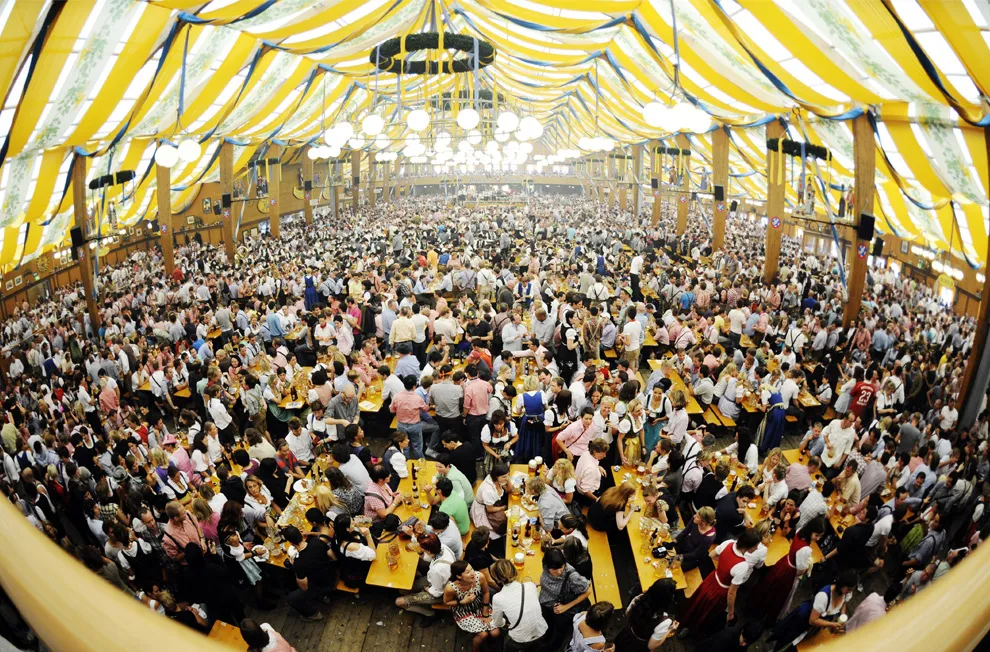
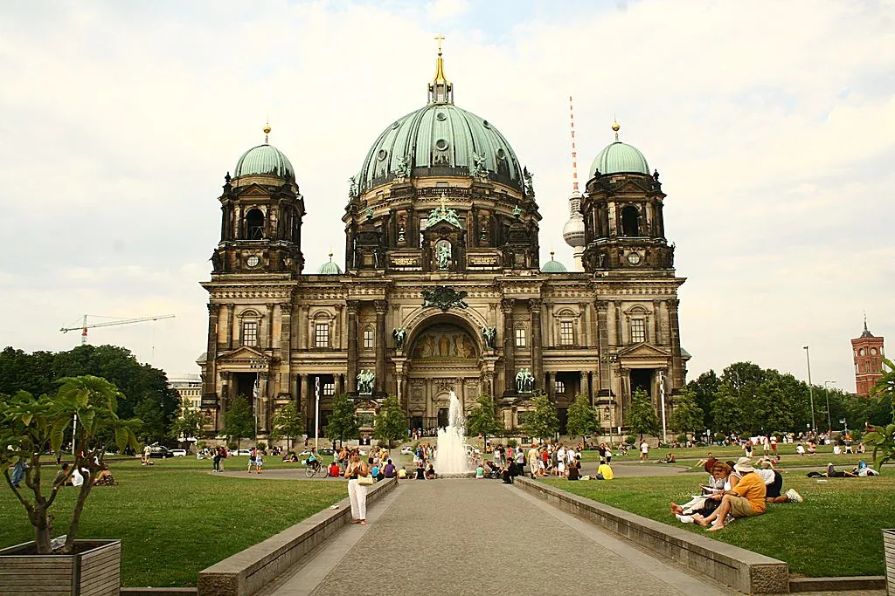
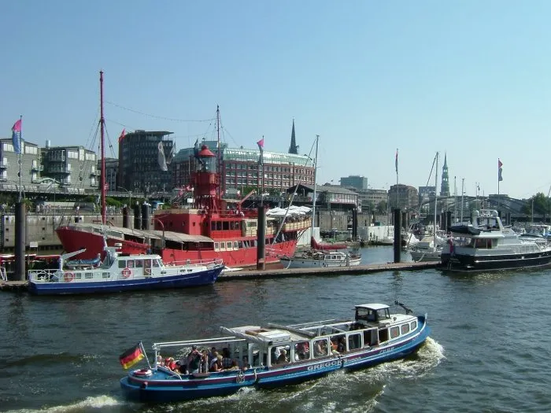

Deutschland(독일, Germany)
| 인구 | 8364만명 | 종교 | 가톨릭, 개신교 |
|---|---|---|---|
| 언어 | 독일어 | 면적 | 357,022km2 |
| 화폐 | 유로(€) | 국조 | 검독수리 |

옥토버페스트(10월의 맥주 축제)
독일 바이에른 주 뮌헨에서 9월 말부터 10월 초까지 2주 동안 열리는 맥주 축제이다. 공식적으로는 옥토버페스트(독일어: Oktoberfest)라고 부르며 10월 맥주축제라고 부르기도 한다. 독일인들은 이 행사를 비즌(Wiesn)으로 줄여 부르기도 하는데 축제가 열리는 곳이 뮌헨의 테레지엔비제(Theresienwiese)이기 때문이다. 평소에는 광화문 앞 광장 정도의 널직한 광장이나 이 축제 기간이 되면 광장이 통째로 놀이공원+소맥 텐트촌으로 변한다. 2주 간을 위해 웬만한 놀이기구들도 들어선다.
베를린 국제 영화제
독일의 국제 영화제로, 베를린에서 매년 2월 개최된다. 칸 영화제, 베니스 국제 영화제와 함께 세계 3대 영화제 중 하나로 유명하다. 베를리날레(Berlinale)라고도 불리며, 상징물은 곰이다.


Berlin
베를린(Berlin)은 독일의 수도로 유럽 연합 단일 최대도시이며, 독일 동북부에 위치한다. 18세기 초에 프로이센의 수도가 된 이후로 독일의 중심지 역할을 하고 있다. 상징은 곰이다. 도시주이며 브란덴부르크 주 내부에 둘러싸여 있다.
Hamburg
독일 북서부에 위치한 도시주로 한 도시가 그대로 주인 곳이다. 북해 연안에서 독일 최대의 항구이며 독일 제2의 도시이다. 독일 전체에서 1인당 주민소득 1위일 정도로 부촌이며, 세계 각국의 회사가 모여 있는 물류의 중심지이자 전 세계인의 음식 Hamburger의 어원이 된 도시이다.


Munchen(Munich)
뮌헨은 독일 동남부 바이에른 주의 최대 도시이자 주도이며, 베를린과 함부르크에 이은 독일 제3의 도시이다. 분데스리가 최고의 명문팀인 FC 바이에른 뮌헨의 연고 도시이며, 세계적인 축제 중 하나인 옥토버페스트가 열리는 장소이다.